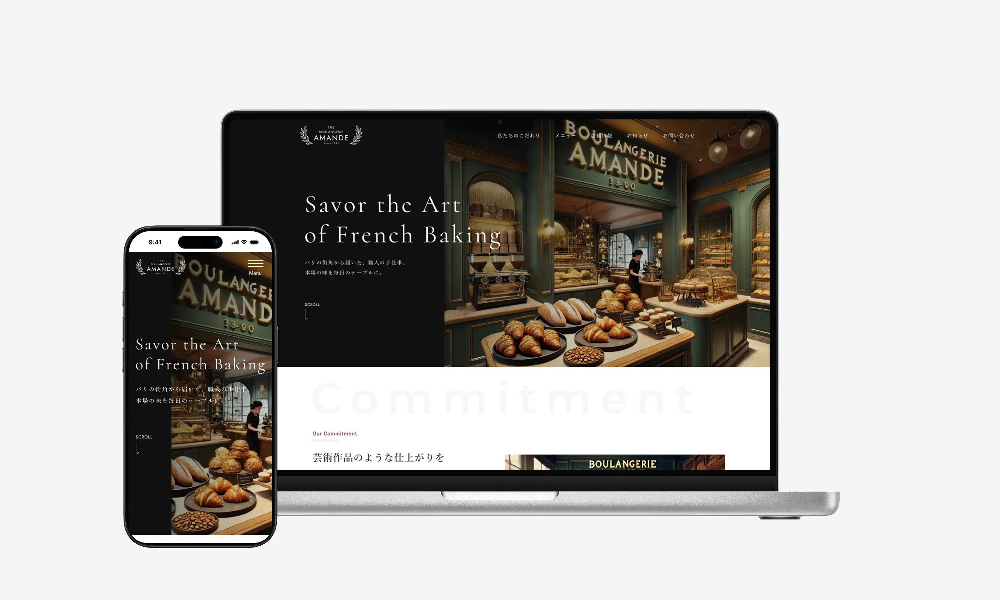
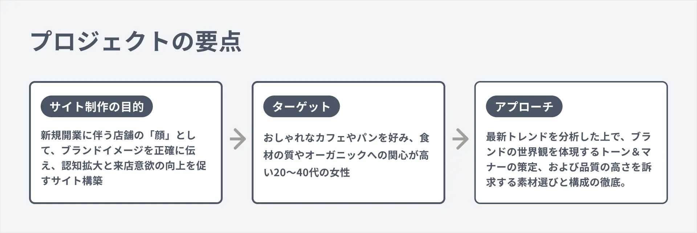
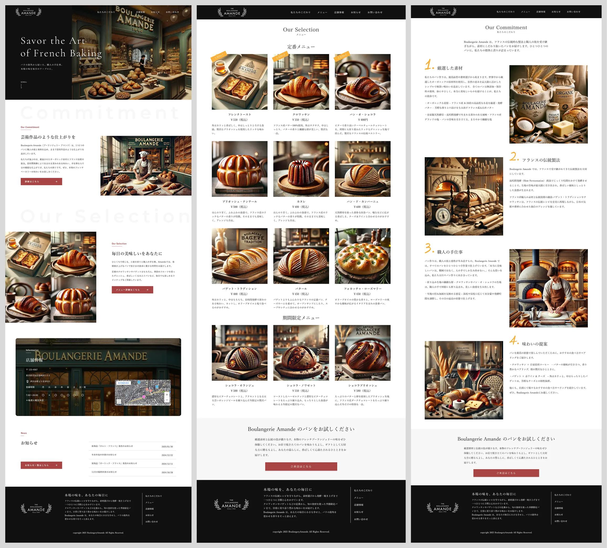
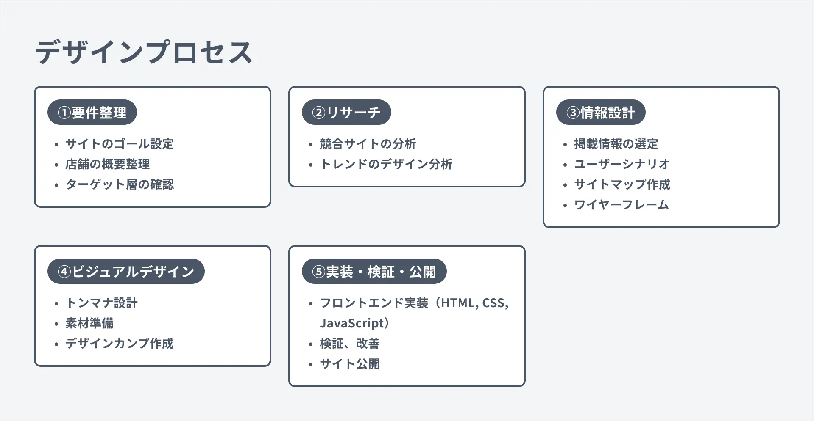
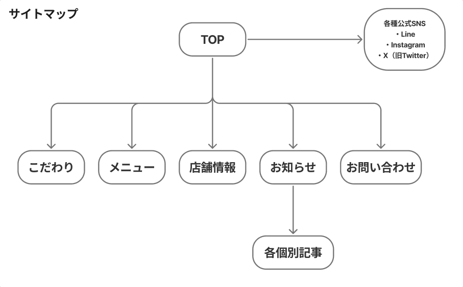
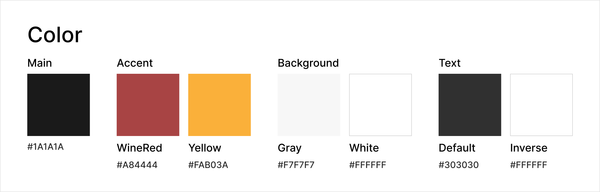
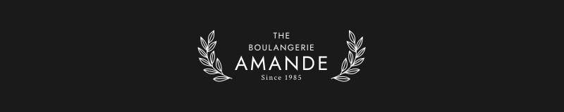

本格ベーカリーの店舗サイト
- Webサイト
- 自主制作

本プロジェクトは、Web制作におけるデザイン表現と実装スキルの証明を目的として制作した、架空の高級ベーカリー「Boulangerie Amande（ブーランジェリー・アマンド）」の店舗サイトです。
- カテゴリー：店舗サイト
- 制作種別：自主制作
- 担当領域：企画、デザイン、コーディング
- 使用ツール等：Figma, HTML, CSS(Sass), JavaScript, git, Github
- 制作期間：3週間
プロジェクト概要
本プロジェクトは、新規開業する架空の高級志向のパン屋から依頼を受けた想定で制作した、ブランドの「顔」となる店舗サイトです。 お店のブランドイメージをWeb上で体現し、認知拡大と来店意欲の向上を図ることを目的に制作しました。 ターゲットは、おしゃれなカフェやパンを好み、食材の質やオーガニックにこだわる20〜40代の女性に設定。近年のデザイン動向を分析した上で、ブランドの独自性を損なわないようトーン＆マナーや素材選びを徹底し、サイト全体で洗練された世界観と品質の高さが伝わる構成を追求しました。

最終成果物

Boulangerie Amandeの店舗サイトはこちら
フランスのパン作りの芸術を提供する高級志向の本格ベーカリー「Boulangerie Amande」
デザインプロセス
デザインプロセスは以下の手順で進めました。以下の章で詳細なプロセスを紹介します。

1. 要件整理
新規開業する架空の高級志向のパン屋から依頼を受けた想定で制作した、ブランドの「顔」となる店舗サイトです。実務における要件を想定し、以下の設定を構築して制作を開始しました。
クライアント情報
Boulangerie Amande（ブーランジェリー・アマンド）」は、東京都渋谷区に店舗を構える高級志向のフレンチベーカリーです。 厳選された素材とフランスの伝統的な製法にこだわり、職人の手によって一つひとつ丁寧に焼き上げられたパンを提供しています。
サイト制作の目的
新規開業に伴う店舗の「顔」として、ブランドイメージを正確に伝え、認知拡大と来店意欲の向上を促したい。
ターゲット層
おしゃれなカフェやパンを好み、食材の質やオーガニックへの関心が高い20〜40代の女性
2. リサーチ
次に、リサーチとして、競合サイトの分析および、デザイントレンドの分析、参考となるサイトの収集を行いました。
- 競合サイトの分析： ターゲット層から支持される人気店や、同様のブランドコンセプトを持つ高級ベーカリーのサイトを複数調査。パンの魅力を引き立てる見せ方や、来店へ繋げる動線設計の共通項を分析しました。
- デザイントレンドの分析： 近年のWebデザインにおける最新トレンドを把握し、高級感と親しみやすさを両立させる視覚表現を模索。ミニマルなレイアウトや、洗練されたタイポグラフィの活用方法を精査しました。
- ビジュアルリファレンスの収集： 分析結果に基づき、ブランドの世界観を具体化するためのビジュアル素材を収集。色調、フォント、写真の構図など、目指すべきトーン＆マナーの指針となるリファレンスを整理し、デザインの基盤を構築しました。
3. 情報設計
これまでのリサーチで得られた知見を基に、ターゲットの関心を高めるために必要なコンテンツを厳選し、ブランドのこだわりが最も伝わる情報の優先順位と掲載順序を検討しました。 この構成案をサイトマップとして整理した上で、各要素の具体的なレイアウトを定義するワイヤーフレームを作成し、デザインの土台となる論理的なサイト構造を構築しました。

4. ビジュアルデザイン
これまでの競合分析やトレンド調査の結果を反映させ、本店舗のブランドイメージを最大限に引き出すトーン＆マナーを策定しました。
全体を貫く高級感と洗練された印象を演出するため、メインカラーには重厚感のあるブラック（#1a1a1a）を採用。 一方で、飲食店としての温かみやパンの美味しさを損なわないよう、深みのあるワインレッドと柔らかなイエローをアクセントに加え、視覚的なリズムと情緒的な魅力を両立させています。 また、本文フォントには優雅な明朝系のNoto Serif JPを選定し、ブランドの落ち着いた品格を表現しました。 さらに、これら全ての視覚設計においてWCAG基準に準拠したコントラスト比を確保し、高いデザイン性とアクセシビリティを両立したビジュアル構築を行っています。

ロゴは「上質で伝統あるフレンチベーカリー」というブランドコンセプトを視覚化することを目的に設計しました。 安定感のあるサンセリフ体を中心に、補助的な細身のフォントを組み合わせることで、視認性と上品さのバランスを意識しています。 左右のローレルは職人技や伝統の象徴として配置し、構図はシンメトリーにすることで信頼感と洗練された印象を与えるようにしました。

最終的に出来上がったデザインカンプは以下
5. 実装・公開・検証改善
デザインカンプを忠実に再現するため、HTML/CSS（Sass）およびJavaScriptを用いて実装を行いました。あらゆるデバイスで最適な体験を提供できるよう、モバイルファーストのレスポンシブ設計を徹底し、単なるレイアウト調整に留まらず、画面幅に応じた余白やフォントサイズの最適化により、一貫して快適なユーザー体験を担保しています。
アニメーションに関しては、ブランドの落ち着いた雰囲気を損なわないよう、フェードインを中心とした自然な動きに限定しました。これにより、表示速度や可読性を維持しながら、スムーズな視線誘導を実現しています。また、ボタンなどのインタラクティブな要素には微細なホバーアクションを加え、クリック可能性を直感的に伝える視覚的なフィードバックを実装しました。
さらに、公開に際してはアクセシビリティや表示負荷の検証を多角的に実施。デバイス固有のレイアウト崩れや読み込み速度の課題を細部まで改善し、実用性と品質を兼ね備えたサイトとして仕上げています。
Boulangerie Amandeの店舗サイトはこちら
フランスのパン作りの芸術を提供する高級志向の本格ベーカリー「Boulangerie Amande」